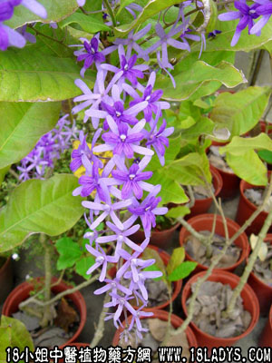

锡叶根(中药材植物名:锡叶藤)(植物科目:锡叶藤科)

植物名：锡叶藤。
生长环境：本品为藤本。在山野间野生。
分布：我国南部。
入药部分：根。
采集期：全年。
自采地点：山岗。
性味：性平、味淡。
功能：收敛、止血、止泻、止痢。
主治、用量和用法：1、久痢：干根1至2两，清水煎服或加猪瘦肉同煎；2、小肠气痛：干根1至2两，清水煎服，或加猪小肚同煎；3、大便下血：用法同上。
验方1（治小肠疝气方）：锡叶根1两、黄皮根5钱、苦灯笼5钱、清水三碗，煎成一碗服。
（方解）本方苦灯笼根散结破血而祛湿、锡叶根5导小肠膀胱邪热，黄皮根平肝化气，有宣通作用，湿去热除，共病自愈。
（方歌）小肠疝气湿热因，锡叶苦笼两用根，再加黄皮根煎服，宣通湿热法堪珍。
本文解释权归中药大全，本文地址：https://www.daquan.com/post/1598.html